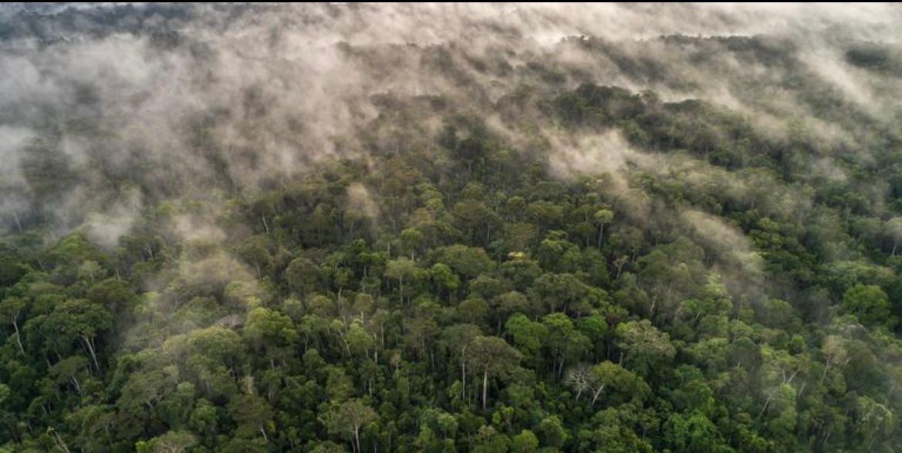

Uma solução tecnológica de alto padrão desenhada para combater crimes ambientais, organizar coletas e engajar comunidades na preservação da Amazônia.

O SIDMA é uma plataforma moderna e intuitiva desenvolvida para empoderar cidadãos, estudantes e organizações na identificação, documentação e resolução de problemas ecológicos na região Amazônica.
Acreditamos que a união entre a engenharia de software e a conscientização social é a chave para frear o avanço do descarte irregular de resíduos, desmatamentos e queimadas criminosas, gerando dados acionáveis e transparentes para um futuro sustentável.
Ver Nossos PilaresO ecossistema inteligente do SIDMA mapeia gargalos operacionais e os transforma em canais eficientes de resposta rápida para a comunidade.
Falta de canais integrados, burocracia e lentidão no acompanhamento de denúncias de descarte irregular e crimes ecológicos.
Um ecossistema web simplificado, de ponta a ponta, focado na coleta ágil de evidências fotográficas e geolocalização exata.
Reduzir o impacto de resíduos sólidos nas cidades e florestas, aproximando a sociedade de respostas reais do setor público.
Insira o endereço manualmente ou use a ferramenta inteligente de GPS integrado para precisão cirúrgica.
Faça o upload de registros fotográficos reais da ocorrência e descreva o cenário detalhadamente.
A denúncia entra imediatamente no banco de dados, catalogada por status para auditoria administrativa.
Os administradores analisam as provas enviadas, tomam as providências adequadas e marcam como resolvida.
Blindar o meio ambiente através do monitoramento popular focado em resultados rápidos de saneamento.
Disponibilizar ferramentas digitais limpas e sem barreiras de login para incentivar o engajamento ecológico.
Gerar relatórios estatísticos reais sobre áreas críticas de descarte para apoiar tomadas de decisões públicas.
Unir a voz da comunidade à competência fiscal das autoridades ambientais competentes.